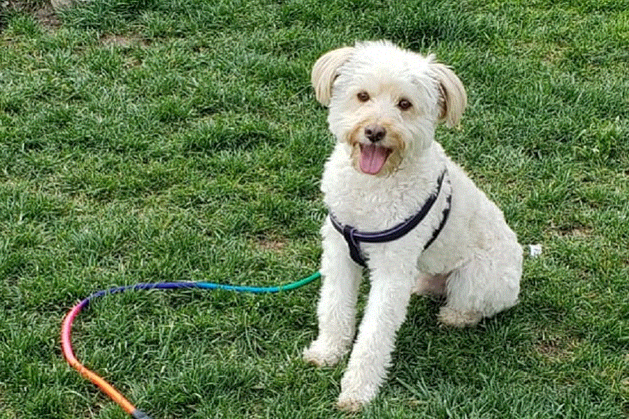

OMG - AYUDA A UN PELUDO
Ayuda a un peludo es una organización sin fines de lucro que
permite encontrar a las mascotas mas queridas por sus familias
Nuestros Integrantes
Elisa Villarroel - Diseñadora
Gerardo Galdames - Jefe Proyecto
Patricio Diaz - Programador
Nuestras Secciones
|

| |
|

| |
Gatos
|